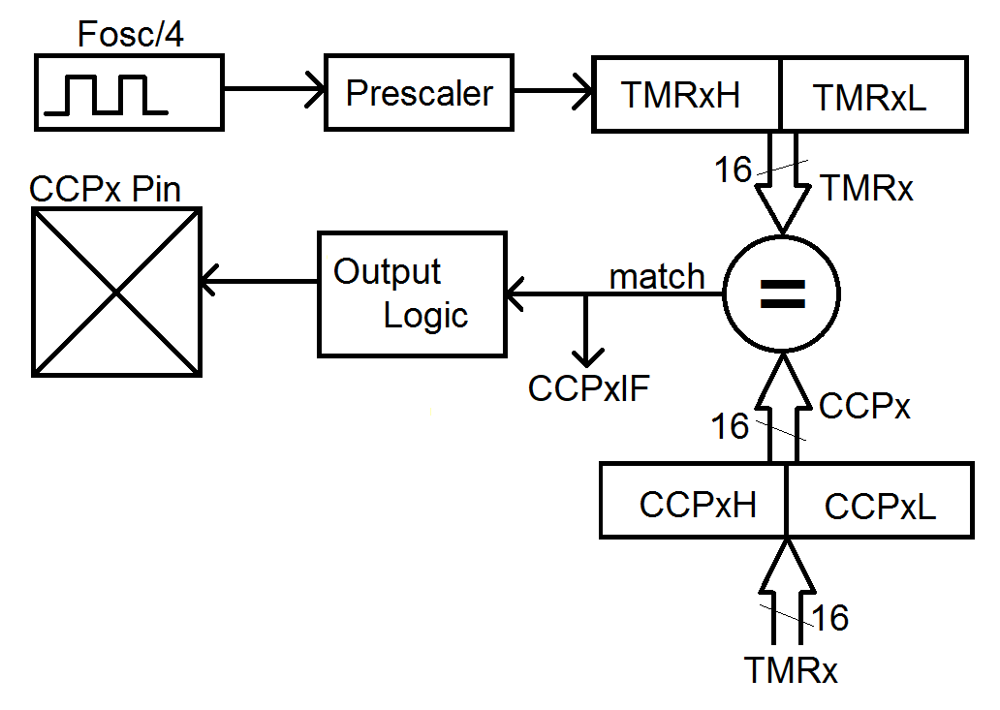

| Lecture: | 11 |
| Objective: | Understand how to generate waveforms using
the compare subsystem. This include the
configuration of the subsystem and assocaited timers.
|
| Code: | lec11.c
lec11-pwm.c |
Timer Compare
So far in our analysis of the timer subsystem we have used prescalers
to convert between time and timer counts. We saw that we can use this
capability to measure the time interval of a logic pulse on a pin.
This is timing task based around a pin input. Let's now turn our
attention to generating pulses with specific durations on output
pins. In order to do this we will need to use a new piece of hardware,
the compare module.
The PIC has five identical compare modules which are connected to one
of three identical clocks. Instead of enumerating all 15 combinations
of compare and clock modules, the technical documents use a lower-case "x"
as a stand in for the (timer or compare) module number.
Compare subsystem
The PIC has five compare modules (CCPx). The digital architecture of
the compare modules are built around:
- a 16-bit timer (TMRx),
- a 16-bit capture/compare register (CCPx),
- a 16-bit comparator (=),
- and a I/O pin (CCPx Pin).
The compare module operates as follows. When the value in the
timer equals the value in the capture/compare register, the match
signal is set. When set, the match signal causes the CCPxIF bit to
be set and sends a signal to the output logic box which determines
the value on the CCPx pin.

Before looking at some examples, let's dive into some details that
are needed when configuring and operating the compare module.
Compare Configuration
At run-time, a given compare module may only work with a specific
pin given in the table below. Modules CCP2 and CCP3 can be configured
to use one of two pins (from the MCC: Project Resources tab →
System Module → Registers → CONFIG3H → CCP2MX or CCP3MX).
As shown in the table below, each of the 5 compare modules can work
with any of the timers. Make sure that you turn-on the timer before
you start trying to work with the compare module; a timer that is not
running will never reach a non-zero value in the capture register!
| Compare Module | Timer | Pin
|
| CCP1 | TMR1, TMR3, TMR5 | RC2
|
| CCP2 | TMR1, TMR3, TMR5 | RC1 (or RB3)
|
| CCP3 | TMR1, TMR3, TMR5 | RB5 (or RC6)
|
| CCP4 | TMR1, TMR3, TMR5 | RB0
|
| CCP5 | TMR1, TMR3, TMR5 | RA4
|
Compare Operation
The I/O pin associated with the compare module performs some action
when the timer matches the compare register. The action is dictated
by the CCPxM field of the CCPxCON register according to the following
table.
| CCPxM | Pin action
|
| 0b0010 | toggle output on match (toggle CCPx pin, CCPxIF is set)
|
| 0b1000 | set output on compare match (set CCPx pin, CCPxIF is set)
|
| 0b1001 | clear output on compare match (clear CCPx pin, CCPxIF is set)
|
We can use the compare module to generate waveforms. For starters,
lets use the timer to generate a 50% duty-cycle waveform with a
period of 1014 us (987 Hz B5 note) and half-period of 507 us (two toggles
per square wave period).
From the Maximum Period column of the prescaler table,
generated in a previous lecture, we can use a 1:1 prescaler because
the maximum period for this prescaler is 8.19 ms. Now we perform some
dimensional analysis to determine the number of counts that will go by
in 8.19 ms.
1 second 106 us 1 clk
------------ * -------- * ------- * x counts = 507 us
16*10^6 clks 1 second 1 count
Solving for x yields 8,112 counts. Now let's look at some code that uses
the compare module to toggle a pin connected to RC1 once every 507 us
(for the complete program, see the link at the top of the lecture).
CCP1CONbits.CCP1M = 0b0010; // Toggle on match
CCPTMRS0bits.C1TSEL = 0b00; // Associate TMR1 with CCP1
T1CONbits.TMR1ON = 1; // Turn on timer 1
TRISCbits.TRISC2 = 0;
for(;;) {
CCPR1 = TMR1 + 8112;
PIR1bits.CCP1IF = 0;
while (PIR1bits.CCP1IF == 0);
// Do stuff
}
The key line of code in this snippet is:
CCPR1 = TMR1 + 8112;, where the CCPR1 register
is set 8112 counts ahead to the current timer count. The subsequent
while-loop
while(PIR1bits.CCP1IF == 0);, waits
for timer 1 to catch up with the value in CCPR1. Since we calculated that
8,112 counts at a 1:1 prescaler is 507 us, it will take 507 us for TMR1
to equal CCPR1. When this happens, the CCPR1 bit of
the PIR1 register will be set causing the while-loop to exit. Note
that the CCP1IF flag is cleared before entering the while-loop using
the statement:
PIR1bits.CCP1IF = 0; .
Generating a PWM waveform
Let's look at one further example before leaving comparators. Write
a code snippet to generate a square wave on RC2 with a period of 1000 us.
The duty cycle of the waveform should increase by 10% everytime an active
low push button attached to RA2 is pressed. The duty cycle should
increase up to 100% when the next button press will reset the duty cycle
back to 0%.
Out solution needs to start with finding the prescaler and timer counts
needed to generate a 1000 us delay. Looking at the Maximum Count column
from the previous lecture, we see that a 1:1 prescaler iis the smallest
prescaler capable of generating a 100 us delay. Dimensional analysis
is needed to determine the number of timer counts.
1 second 106 ms 1 clk
------------ * -------- * ------- * x counts = 1000 us
16*106 clks 1 second 1 count
Solving for x yields 16,000 counts, and creates a 1000 us delay when the
prescaler is set to 1:1. In order to change the duty cycle by 10%, or
10 us, will require adding 1600 counts to the time the waveform is at
logic 1.
// Configure CCP1 and the associated timer
CCP1CONbits.CCP1M = 0b1000; // Set on match
CCPTMRS0bits.C1TSEL = 0b00; // Associate TMR1 with CCP1
T1CONbits.TMR1ON = 1; // Turn on timer 1
// Configure all the I/O pins
TRISCbits.TRISC2 = 0; // MAke RC2 (associated with CCP1) an output
TRISAbits.TRISA2 = 1; // Make the upper button an input
TRISAbits.TRISA3 = 1; // Make the lower button an input
ANSELAbits.ANSA2 = 0; // Upper button is digital input
ANSELAbits.ANSA3 = 0; // Lower button is digital input
for(;;) {
// If CCP1 was configured to set RC2 then lets change it to clear
if (CCP1CONbits.CCP1M == 0b1000) {
CCP1CONbits.CCP1M = 0b1001; // Clear when TMR1 == CCPR1
CCPR1 = TMR1 + (period-duty); // Set CCPR1 ahead of TMR1
PIR1bits.CCP1IF = 0; // Clear the flag the indicates a match
while (PIR1bits.CCP1IF == 0); // Then wait for TMR1 to catch-up with CCPR1
// If CCP1 was configured to clear RC2 then lets change it to set
} else if (CCP1CONbits.CCP1M == 0b1001) {
CCP1CONbits.CCP1M = 0b1000; // Set when TMR1 == CCPR1
CCPR1 = TMR1 + duty; // Set CCPR1 ahead of TMR1
PIR1bits.CCP1IF = 0; // Clear the flag the indicates a match
while (PIR1bits.CCP1IF == 0); // Wait
}
if (PORTAbits.RA2 == 0) {
while (PORTAbits.RA2 == 0);
duty += 1000;
} // end if upper button is pressed
if (PORTAbits.RA3 == 0) {
while (PORTAbits.RA3 == 0);
duty -= 1000;
} // end if upper button is pressed
The short coming of this solution is that while the button is being
pressed, we are not generating the waveform. We will need interrupts
to address this problem, but that is a topic for another lecture.
Test your understanding
You can find the solutions embedded in the "source code" for this
web page by right mouse clicking on this web page and selecting
"view source". The solutions are in HTML comments.
- Assume the timer starts counting at 0x0000, what value of CCP1 will set
CCP1IF in 1mS? The timer has no prescaler (1:1).
- Assume the timer starts counting at 0x0000, what value of CCP1 will set
CCP1IF in 0. 9375mS? The timer has no prescaler (1:1).
- Assume the timer starts counting at 0x0000, and CCP1 = 0x2000, how
long until CCP1IF is set? The timer has no prescaler (1:1).
- Assume the timer starts counting at 0xF000, and CCP1 = 0x1000. What
delay is generated by:
while (PIR1bits.CCP1IF == 0);
The timer has no prescaler (1:1).
- How long is does it take CCP1IF to be set after the following code
ssnippet. The timer has no prescaler (1:1).
CCP1 = TMR0 + 0x2000;